1. C# 專案範本建立步驟 (Slide 03)
投影片 02: Slide 03在 Visual Studio (2019 / 2022) 中建立工控上位機連線專案：
- 選擇專案範本：Windows Forms App (.NET Framework)。
- 目標語言選擇：C#，平台選擇 Windows。
- 目標 Framework：建議選用 .NET Framework 4.7.2 或 4.8，具備最高之 COM / GAC 原生相容性。
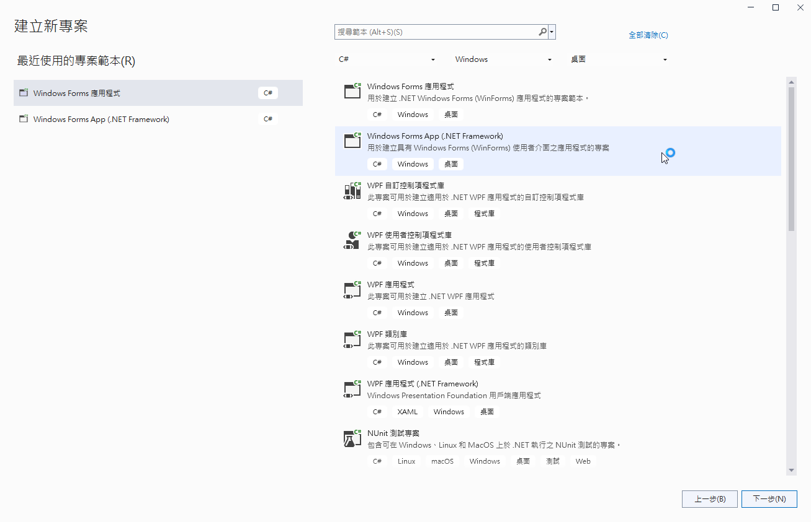
Slide 03: Visual Studio 建立專案精靈視窗2. 引用 RCAPINet.dll 控制元件庫 (Slide 04)
投影片 02: Slide 04
C# 透過原廠封裝之 RCAPINet.dll 與 EPSON RC+ 7.0 控制核心進行高速 IPC 通訊。在方案總管中於「參考 (References)」按右鍵 ➔「加入參考」，指向 Windows GAC 組件快取路徑：
程式碼開頭引入：using RCAPINet;
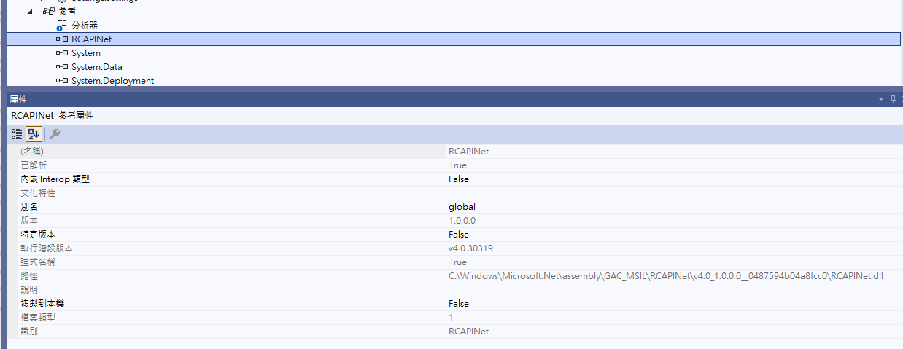
Slide 04: Visual Studio 參考管理員新增 RCAPINet.dllSpel 類別核心方法與官方投影片對照
投影片 02: Slide 06 ~ 21m_spel.Go()
以點對點形式移動至目標點或座標值。
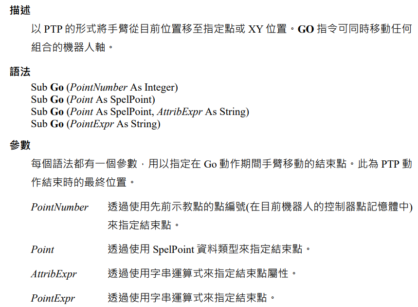
m_spel.Go("P0 /L /2 ROT");
m_spel.Move()
以恆定切線速度沿空間直線進行連續路徑移動。

m_spel.Move("P1");
GetRobotPos()
即時回傳機械手臂當前末端實際座標 $(X, Y, Z, U)$。
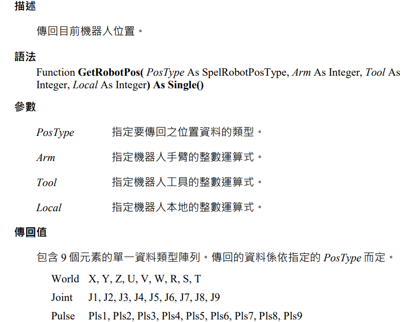
lblX.Text = pos.X.ToString("F2");
JTran() & PTran()
JTran: 關節角度相對位移；PTran: 馬達編碼器脈衝位移。
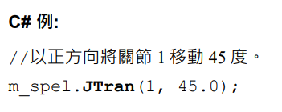
m_spel.PTran(1, 1000); // 脈衝步進
Base() & BGo()
動態設定手臂基底原點偏移，並以基座座標為基準定位。
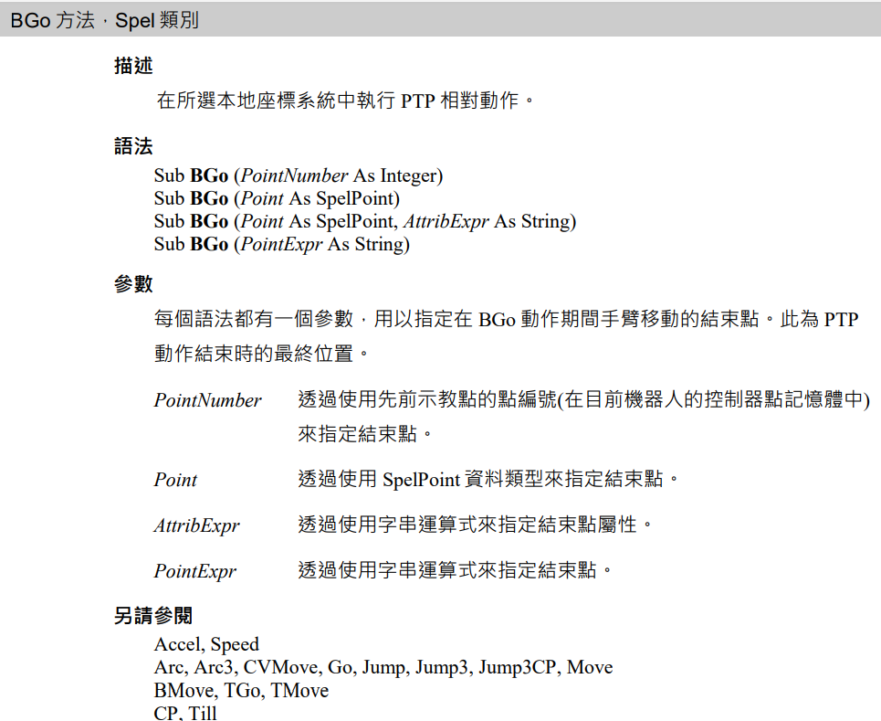
m_spel.BGo(1);
EventReceived 事件
非同步動作執行時，自動分發 Windows 訊息，避免 UI 卡死。
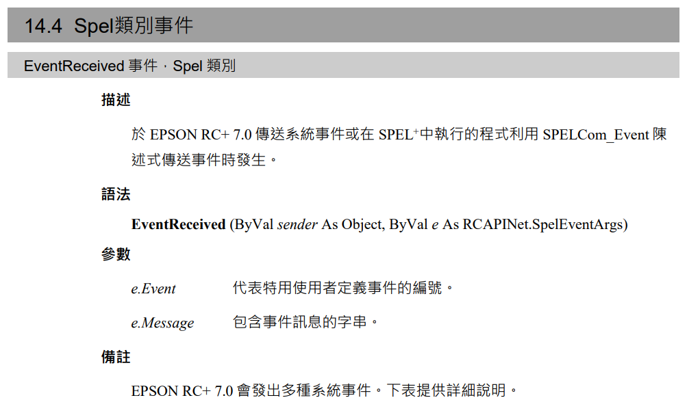
m_spel.Stop(); // 即刻停止動作
常見例外狀況與排除 (SpelException 投影片實戰排查)
投影片 02: Slide 23 ~ 26RCAPINet.SpelException: '!!錯誤: 1808, 未安裝USB驅動器。'
發生成因：上位機透過 USB 連接 RC90 控制器時，驅動未安裝或硬體斷線；若在離線無實體手臂環境下測試 C# 程式，Spel 物件預設嘗試連線實體控制卡亦會噴出此錯誤。
排查 SOP：開啟 EPSON RC+ 7.0 ➔ 建立或連接虛擬控制器 (Virtual Controller) 模擬環境，再行啟動 C# WinForms 測試。
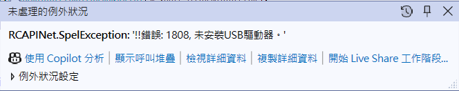
Slide 23: 錯誤 1808 拋出畫面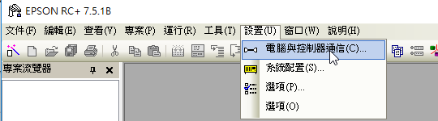
Slide 24: 控制器通信設定排除 SOPRCAPINet.SpelException: '!!錯誤: 10007, 專案不存在。'
發生成因：C# 中 m_spel.Project = @"c:\EpsonRC70\Projects\..." 指定的 .sprj 專案路徑不存在、專案被移動或更名，導致 RC+ 核心無法加載點位表與系統變數。
解決方法：指向官方內建範例專案 c:\EpsonRC70\Projects\SimulatorDemos\C4_sample\C4_sample.sprj，或確認本機硬碟路徑大小寫無誤。
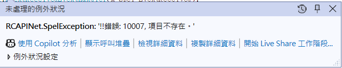
Slide 25: 專案不存在錯誤截圖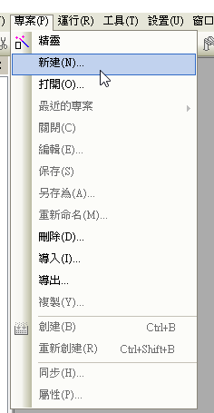
Slide 26: 專案重選與開啟對話框Epson 機器手臂指令模擬測試台
在此您可以測試並觀察執行各種 Spel 指令的模擬反饋。